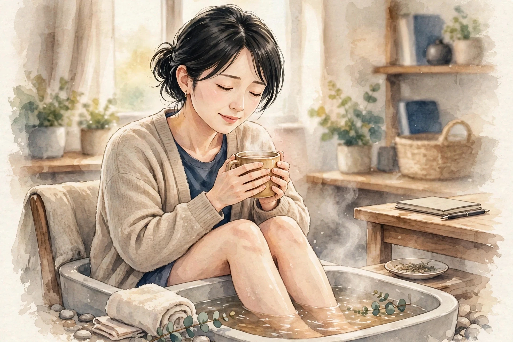

女性専用 ／ オイルマッサージ × 美容整体
一日の終わりに、
肩と心をほどく場所を、
天神に。
近日開院予定（受付は開始次第、このサイトとLINE公式でお知らせします）
美容整体ステラ・アンタレスは、福岡・天神エリアで開院準備中の女性専用サロンです。仕事帰りの夕方から夜にかけて、オイルマッサージと美容整体で、肩こりや首の重さ、姿勢の崩れといった日々のお悩みに寄り添います。
- 女性専用 女性のお客様のみご利用いただけます
- 90分 10,000円 分かりやすい単一価格です
- 月〜土 17:00〜22:00（予定） お仕事帰りに立ち寄れる時間帯です

こんなお悩みはありませんか
当てはまるものが多いほど、毎日の姿勢や過ごし方に負担が積み重なっているサインかもしれません。まずはチェックしてみてください。
- 夕方になると肩が重く、手で揉みたくなる
- スマートフォンを見る時間が長く、首が前に出ている気がする
- デスクワークで背中が丸まり、姿勢が気になる
- 脚のむくみが気になり、靴がきつく感じる日がある
- 頭が重く感じて、すっきりしない日が続いている
- 冷えが気になり、手足が冷たいことが多い
- 眠りが浅く、朝起きても疲れが残っている感じがする
- 顔のむくみや、フェイスラインのもたつきが気になる
お悩みごとの詳しい解説とセルフケアは、でご紹介しています。
施術の様子
アンタレスの施術は、オイルマッサージと美容整体を組み合わせた90分です。当日のお体の状態をお聞きしながら、力加減や重点的にほぐす部位を調整します。
01
カウンセリング
その日のお悩みや体調、気になる部位をお聞きします。姿勢の様子も一緒に確認し、施術の進め方をご相談します。
02
オイルマッサージ
オイルを使って背中・肩・脚などを流れるようにほぐします。こわばりやすい肩や首まわりは、様子を見ながら丁寧に圧を調整します。
03
美容整体
骨盤や背骨まわりのバランスに目を向けながら、姿勢が整いやすい状態を目指します。無理に強い力を加える施術は行いません。
※ 当サロンでは鍼灸は行いません。施術は医療行為ではなく、リラクゼーションと美容を目的としたものです。
料金・営業案内
料金はシンプルな単一価格です。コース選びで迷うことなく、当日のお悩みに合わせて内容を組み立てます。
90分 ／ 10,000円（税込）
近日開院予定（受付は開始次第、このサイトとLINE公式でお知らせします）- ・ 料金は90分10,000円の単一価格です
- ・ 担当セラピストは開院時にご案内します
- ・ お問い合わせ用LINE公式アカウントを開設しました
| 店名 | 美容整体ステラ・アンタレス |
|---|---|
| 場所 | 福岡・天神エリアで開院準備中（施設・住所は決まり次第ご案内します） |
| 対象 | 女性専用 |
| 施術内容 | オイルマッサージ、美容整体（鍼灸は行いません） |
| 料金 | 90分 10,000円（単一価格） |
| 営業時間（予定） | 月〜土 17:00〜22:00 ／ 日曜休み（いずれも予定です） |
| 予約受付 | 近日開院予定のため、現在は受付を行っていません。受付は開始次第、このサイトとLINE公式でお知らせします |
| お問い合わせ | お問い合わせ用LINE公式アカウントを開設しました |
姉妹店のご案内
ステラシリーズは、星の名前を冠した女性専用サロンです。営業中の姉妹店は各店のサイトでご案内しています。
営業中の姉妹店
開院準備中の姉妹店
- 美容整体ステラ・リゲル（東京）開院準備中
- 美容整体ステラ・カペラ（名古屋）開院準備中
- 美容整体ステラ・アンタレス（福岡）開院準備中
このサイトです - 美容整体ステラ・デネブ（札幌）開院準備中
- 美容整体ステラ・プロキオン（横浜）開院準備中
- 美容整体ステラ・アルデバラン（仙台）開院準備中
- 美容整体ステラ・レグルス（広島）開院準備中
- 美容整体ステラ・ベテルギウス（大宮）開院準備中
開院のお知らせについて
美容整体ステラ・アンタレスは近日開院予定です。開院日と受付の開始は、このサイトとLINE公式でお知らせします。お問い合わせ用LINE公式アカウントを開設しました。開院まで、でセルフケアの読み物をお届けします。
セラピストとして働くことに興味のある方は、をご覧ください。
LINE公式アカウントでお問い合わせ
開院・受付開始のお知らせもLINEでお届けします
お悩み別ページ
気になるお悩みを選ぶと、要因の整理・セルフケア・受診の目安をまとめた解説ページをご覧いただけます。解説は一般的な情報であり、診断や治療を行うものではありません。
肩こり
夕方に重くなる肩、揉んでも戻ってしまう張り。デスクワークや姿勢との関わり、毎日のセルフケアの組み立て方を解説します。
首こり
スマートフォンやパソコンで前に出た頭を支える首の負担。首まわりの仕組みと、無理のないほぐし方・整え方を解説します。
腰の重さ・腰痛
一日立っていると夕方に重くなる腰。立ち姿勢の偏りや前かがみの作業など要因を整理し、毎日のセルフケアを解説します。
眼精疲労・目の疲れ
接客と画面の行き来で重くなる目元。ピントの切り替えや照明、乾燥など要因を整理し、蒸しタオルや遠くを見る休憩など毎日のセルフケアを解説します。
姿勢・猫背が気になる
接客や画面姿勢で丸くなる背中、前に出る頭。重心線の考え方など猫背の仕組みを整理し、胸を開くストレッチや壁立ちチェックなどセルフケアを解説します。
寝つき・眠りの浅さ
シフト勤務や寝苦しさで眠れない、眠りが浅い。体内時計と深部体温の仕組みを整理し、安眠・神門など眠りのツボや寝室環境の整え方などセルフケアを解説します。
脚のむくみ・だるさ
立ち仕事のあとに張る夕方の脚。姿勢の長さや湿気、冷えなど要因を整理し、その場でできる脚の動かし方など毎日のセルフケアを解説します。
冷えが気になる
温暖な街でも気になる手足の冷たさ。汗冷えや冷房、湿気など要因を整理し、足湯や湯船など毎日のセルフケアを解説します。
頭の重さ・すっきり感
雨の日に重くなる頭、こめかみの重だるさ。気圧の変化や湿度など要因を整理し、こめかみをほぐすセルフケアや受診の目安を解説します。
体のだるさ
湿度の高い日に増す体の重さ、抜けないだるさ。汗の乾きにくさや寒暖差など要因を整理し、湯船などのセルフケアや受診の目安を解説します。
よくある質問
開院前にいただくことの多いご質問をまとめました。受付に関する最新情報は、このサイトでお知らせします。
いつ開院しますか
近日開院予定です。具体的な開院日は決まり次第、このサイトとLINE公式でお知らせします。現在は予約の受付を行っていません。
場所はどこですか
福岡・天神エリアで開院準備中です。施設と住所は確定次第ご案内します。それまでの間、所在地に関する個別のお問い合わせにはお答えできない場合があります。
女性専用ですか
はい、女性のお客様専用のサロンです。
料金はいくらですか
オイルマッサージと美容整体を組み合わせた90分コースが10,000円の単一価格です。時間や部位によって料金が変わることはありません。
どんな施術ですか。鍼は使いますか
オイルを使ったマッサージと、姿勢のバランスに目を向ける美容整体を組み合わせた施術です。鍼灸は行いません。また、施術は医療行為ではなく、病気の診断や治療を目的としたものではありません。
営業時間を教えてください
月〜土の17:00〜22:00、日曜休みを予定しています。開院時に改めて確定した時間をご案内します。
担当のセラピストは分かりますか
担当セラピストは開院時にご案内します。当サロンは業務委託スタッフ主体の運営のため、個人プロフィールは掲載していません。
予約や問い合わせはどうすればいいですか
受付は開始次第、このサイトとLINE公式でお知らせします。お問い合わせ用LINE公式アカウントを開設しました。下のボタンから友だち追加してお問い合わせください。
妊娠中でも施術を受けられますか
体調や時期によって対応が異なります。開院後の受付開始時に、あらためてご案内します。ご不安な場合は、かかりつけ医への確認をおすすめします。
痛い施術ですか
力加減はお声を聞きながら調整します。無理に強い力を加える進め方はしませんので、施術中も遠慮なくお伝えください。
経絡・経穴ガイド
東洋医学で体のエネルギーの通り道とされる「経絡」と、その上にある要所「経穴（ツボ）」の基礎知識です。当サロンの施術では鍼は使いませんが、経穴の位置を目安に、手や指でやさしく圧をかけるアプローチを取り入れています。ここでの説明は伝統的な考え方の紹介であり、特定の症状への効果を保証するものではありません。
経絡とは
経絡は、東洋医学の古典に基づく考え方で、全身を巡る流れの道筋を指します。正経と呼ばれる主要な経絡は12本あり、それぞれ内臓の働きと結びつけて考えられてきました。経穴は経絡上に点在する要所で、古典では360以上が知られています。現代では、経穴の位置は骨や筋肉の目印からの距離で表す方法が広く使われています。
施術でよく触れる経穴
| 肩井（けんせい） | 肩の稜線のほぼ中央、首の付け根と肩先の中間あたりにある経穴。肩まわりの施術で目安にする代表的な点です。強く押しすぎず、呼吸に合わせてやさしく圧をかけます。 |
|---|---|
| 天柱（てんちゅう） | 首の後ろ、髪の生え際の高さで、太い筋肉の外側のくぼみにある経穴。首の後ろ側をほぐす際の目安になります。 |
| 風池（ふうち） | 後頭部の下、耳の後ろの骨と首の筋肉の間のくぼみにある経穴。天柱よりやや外側に位置します。頭を支えるように、指の腹で包むように触れます。 |
| 合谷（ごうこく） | 手の甲側、親指と人差し指の骨が合う部分のやや人差し指寄りのくぼみにある経穴。手軽に触れられるため、セルフケアでも使われることが多い点です。 |
| 曲池（きょくち） | 肘を曲げたときにできるしわの、外側の端にある経穴。腕まわりの施術の目安になります。 |
| 足三里（あしさんり） | 膝のお皿の下、外側のくぼみから指幅4本ほど下にある経穴。脚の施術でよく知られる点の一つです。 |
| 三陰交（さんいんこう） | 内くるぶしの頂点から指幅4本ほど上、すねの骨の後ろ際にある経穴。脚の内側のラインをたどる際の目安です。 |
| 湧泉（ゆうせん） | 足の裏、指を曲げたときにくぼむ部分にある経穴。足裏へのアプローチの目安になります。 |
ご自宅で経穴に触れるときの注意
- 押す力は「気持ちよい」と感じる程度までにとどめ、痛みを我慢して強く押さないでください。
- 1か所につき、ゆっくり呼吸しながら5秒ほど圧をかけ、数回繰り返すくらいが目安です。
- 皮膚に傷や炎症がある場所、体調がすぐれないときは避けてください。
- しびれや強い痛みなど気になる症状がある場合は、セルフケアで様子を見続けず、医療機関に相談してください。
※ 経穴の位置は体の目印からの目安です。個人差があるため、位置の感じ方には幅があります。
セラピスト募集
美容整体ステラ・アンタレス（福岡・天神エリア）では、開院に向けて業務委託のセラピストを募集しています。夕方から夜の時間帯を中心に、あなたのペースで働ける形を一緒に作っていきましょう。
| 雇用形態 | 業務委託 |
|---|---|
| 報酬 | 施術料の60％ |
| 勤務地 | 福岡・天神エリア（施設は開院準備中です） |
| 働く時間 | 月〜土 17:00〜22:00（予定）の範囲で、希望に合わせて設定できます |
| 対象 | 女性セラピストを募集しています（女性専用サロンのため） |
未経験者は研修無料
未経験の方も歓迎します。施術の基礎から学べる研修を無料でご用意していますので、安心してスタートできます。
経験者は技術をそのままメニューに
経験者の方は、お持ちの技術をそのままメニュー化できます。これまで磨いてきた手技を、そのままお客様に届けてください。
時間は希望に合わせて
働く時間は希望に合わせて設定できます。週に数日だけ、夜の数時間だけといった働き方もご相談ください。
Stella Antares — Beauty Seitai Salon for Women
Stella Antares is a women-only salon preparing to open in the Tenjin area of Fukuoka, Japan. We combine oil massage with beauty seitai (a Japanese body-balancing treatment) in a single, simple 90-minute session.
| Salon | Beauty Seitai Stella Antares — women only |
|---|---|
| Location | Tenjin area, Fukuoka (preparing to open; address to be announced) |
| Treatment | Oil massage and beauty seitai. We do not offer acupuncture. Treatments are for relaxation and beauty care, and are not medical treatment. |
| Price | 90 minutes — ¥10,000 (single flat rate, tax included) |
| Hours (planned) | Monday to Saturday, 5:00 p.m. – 10:00 p.m. Closed on Sundays (planned) |
| Therapists | Our therapists will be introduced when the salon opens. |
| Contact | Our official LINE account for inquiries is now open. Please add us as a friend using the button below to contact us. |
About the treatment
Each session begins with a short consultation about how your body feels that day — stiff shoulders, a heavy neck, tired legs, or posture concerns. The oil massage works over the back, shoulders and legs with pressure adjusted to your comfort, and the beauty seitai part focuses on the balance around the pelvis and spine, aiming for a posture that feels naturally upright. Strong, painful techniques are not used.
Sister salons
Stella Antares is part of the Stella series of women-only salons, each named after a star. Our sister salons in Umeda (Osaka), Sannomiya (Kobe), Namba (Osaka), Ashiya and Kyoto are already open, and further salons — including Antares in Fukuoka — are in preparation in Tokyo, Nagoya, Sapporo, Yokohama, Sendai, Hiroshima and Omiya.
ブログ・コラム
お悩み別の解説ページと、季節に合わせたセルフケアのコラムをお届けします。開院に向けて、少しずつ記事を増やしていきます。
-
 コラム ／ 季節のセルフケア
コラム ／ 季節のセルフケア那珂川沿いの風が冷たくなる福岡の晩秋は、冷えと乾燥の両方を感じやすい時期です。温める工夫、水分と保湿、こわばりをためない小さな動きをご紹介します。
-
 お悩み別 ／ 肩こり
お悩み別 ／ 肩こりデスクワークや姿勢と関わる肩の張りを、要因ごとに整理しました。毎日のセルフケアと、受診を考える目安もまとめています。
-
 お悩み別 ／ 首こり
お悩み別 ／ 首こり前に出た頭を支える首の負担を、姿勢の観点から整理しました。画面との付き合い方や、首まわりのセルフケアをご紹介します。
-

お悩み別 ／ 冷え汗冷えと冷房のある福岡で冷えを感じやすくなる要因を整理しました。毎日のセルフケアと受診の目安もまとめています。
-
 お悩み別 ／ 腰の重さ・腰痛
お悩み別 ／ 腰の重さ・腰痛立ち仕事の多い天神で重くなりやすい腰の要因を整理しました。毎日のセルフケアと受診の目安もまとめています。
-
 お悩み別 ／ 眼精疲労・目の疲れ
お悩み別 ／ 眼精疲労・目の疲れ接客の多い天神で目の疲れを感じやすくなる要因を整理しました。職場と自宅でできるセルフケアと受診の目安もまとめています。
-
 お悩み別 ／ 脚のむくみ
お悩み別 ／ 脚のむくみ立ち仕事の多い天神で脚のむくみを感じやすくなる要因を整理しました。毎日のセルフケアと受診の目安もまとめています。
-
 お悩み別 ／ 頭痛・頭の重さ
お悩み別 ／ 頭痛・頭の重さ雨の日や湿度の高い日に頭が重くなりやすい方へ、気圧や姿勢など要因の整理と、こめかみほぐしなどのセルフケア、受診の目安をまとめました。
-
 お悩み別 ／ 体のだるさ
お悩み別 ／ 体のだるさ湿度の高い福岡で体のだるさを感じやすい方へ、気候や睡眠など要因の整理と、湯船・軽い運動などのセルフケア、受診の目安をまとめました。
-
 お悩み別 ／ 姿勢・猫背
お悩み別 ／ 姿勢・猫背立ち仕事とデスクワークで背中が丸くなりやすい方へ、重心線の考え方に基づく猫背の仕組みの整理と、胸を開くストレッチなどのセルフケア、受診の目安をまとめました。
-
 お悩み別 ／ 寝つき・眠りの浅さ
お悩み別 ／ 寝つき・眠りの浅さ寝つきの悪さや眠りの浅さが気になる方へ、体内時計と深部体温の仕組みの整理と、安眠・神門などのツボ押しや寝室の整え方といったセルフケア、受診の目安をまとめました。
開院のお知らせや新しい記事は、このページとサイトのトップでご案内します。
サイトマップ
美容整体ステラ・アンタレスのサイト内のページ一覧です。
サイト内のページ
記事ページ
姉妹店（外部サイト）
天神で気になる肩こり ── 要因の整理と、毎日のセルフケア
「一日の仕事を終えて天神の街に出たとき、肩がずっしりと重い」「帰りの地下鉄やバスの中で、思わず肩をぐるぐる回してしまう」。福岡・天神は九州随一の商業地であると同時に、多くのオフィスが集まる働く街でもあります。デスクワーク中心の方、接客や販売で一日立ち続ける方、通勤で地下鉄やバスに揺られる方。過ごし方はさまざまでも、夕方になると肩まわりの張りや重さを感じる方は少なくありません。肩こりは病名ではなく、首から肩、背中にかけての張り・重さ・だるさをまとめて表す言葉です。感じ方には個人差が大きく、検査で大きな異常が見つからないことも珍しくありません。だからこそ、「なぜ張りやすいのか」を整理し、日常の工夫と外からのケアを組み合わせていくことが大切です。このページでは、肩こりの要因とセルフケア、受診の目安をまとめました。
肩の張りは、どこから来るのか
肩まわりは、僧帽筋をはじめとする複数の筋肉が何層にも重なってできています。頭の重さはおよそ5〜6キログラムと言われ、その頭を支え、腕を動かすたびに働く肩まわりの筋肉には、立っているだけ、座っているだけでも小さな負担が積み重なります。筋肉が力んだ状態が長く続くと、まわりの血の巡りが滞りやすくなり、重さや張りとして感じやすくなると考えられています。張りを覚える場所は人それぞれで、肩の稜線の真ん中あたりが気になる方、肩甲骨の内側が詰まったように感じる方、首筋から肩先まで広い範囲でだるい方もいます。「どこが、どんなときに気になるか」を把握しておくと、ケアの重点が定めやすくなります。
要因の整理：肩が張りやすくなる5つの背景
1. 通勤と移動の姿勢
福岡では、地下鉄や西鉄の電車・バスで通勤する方が多くいます。車内ではスマートフォンを見下ろす姿勢が続きやすく、つり革や手すりにつかまる側の肩には片寄った負担がかかります。バッグをいつも同じ側の肩にかけていると、首から肩にかけてのバランスも偏りがちです。座れたときはバッグを膝の上に置く、立つときは両足に均等に体重をかけるなど、移動中の小さな工夫が肩の負担を分け合ってくれます。
2. デスクワークと画面の環境
天神のオフィスでパソコンに向かう時間が長い方は、腕を前に出した姿勢が続きます。この姿勢では肩が内側へ巻き込みやすく、肩甲骨が外側へ開いたまま固まりがちです。筋肉は、大きく動かしているときよりも「同じ姿勢で力を入れ続けている」ときに疲れを感じやすい性質があります。画面が低い、椅子と机の高さが合っていないといった環境も、知らないうちに肩へ負担を寄せます。1時間に一度は席を立って肩を回すなど、姿勢を変える合図を自分で作ることが、ため込まない第一歩です。
3. 冷房と外気の寒暖差
福岡の夏から秋にかけては蒸し暑い日が続き、屋外と、冷房の効いたオフィスや地下街との行き来が増えます。汗をかいた体が冷房で急に冷えると、首や肩の筋肉はこわばりやすくなります。天神地下街のような長い地下通路を歩く移動が多い方も、冷えた空気に長く触れることになります。薄手の羽織りものを一枚持ち歩く、首元を覆う、といった備えは、冷えからくる張りをやわらげる助けになります。帰宅後に湯船で肩まで温まることも、日常でできる大切なケアです。
4. 姿勢の崩れと体の使い方
背中が丸まった姿勢では、頭の位置が体の中心より前にずれ、首や肩の後ろ側の筋肉が引き伸ばされながら頭を支え続けることになります。骨盤の傾きや座り方の癖も、背中から肩への負担の伝わり方に関わります。姿勢は「良い形を一日中保ち続ける」ものではなく、「崩れたら戻す」「同じ形に固めない」ものと考えるほうが、現実的で続けやすくなります。鏡の前で一度、耳と肩の位置関係を確かめてみるのもよい機会です。
5. 睡眠と心身の緊張
仕事の忙しい日が続くと、眠っている間も無意識に肩へ力が入り、朝から張りを感じることがあります。枕の高さが合っていない場合も、首から肩にかけて負担がかかりやすくなります。肩の張りは、その日の体の状態だけでなく、過ごし方全体を映すサインでもあります。張りが強い日は無理を重ねず、休息を優先することもケアの一つです。
当サロンでのアプローチ
ステラ・アンタレスでは、オイルマッサージで背中から肩、首まわりを流れるようにほぐし、肩甲骨のきわにも丁寧にアプローチします。力加減はお声を聞きながら調整し、強く押すこと自体を目的にはしません。美容整体では、骨盤や背骨まわりのバランスに目を向け、肩に負担が集まりにくい姿勢を目指します。施術で目指すのは、その場で「軽くなった」と感じられる心地よさと、日常に戻ったあともご自身の姿勢に目を向けやすくなる状態です。なお、当サロンの施術は医療行為ではなく、肩こりの原因となる病気の診断や治療を行うものではありません。気になる症状が続く場合は、医療機関での相談とあわせてご利用ください。
ご自宅でできるセルフケア
肩回しと肩の上げ下げ
両肩を耳に近づけるようにすくめて3秒保ち、ストンと力を抜いて下ろします。これを5回ほど繰り返したあと、肘で大きな円を描くように肩を前回し・後ろ回しに各5回ずつ動かします。勢いをつけず、呼吸を止めないことがポイントです。デスクワークの合間に取り入れると、ため込んだ緊張を小分けにほぐせます。
胸を開くストレッチ
背筋を伸ばして両手を背中の後ろで組み、肩甲骨を寄せるようにしながら、組んだ手を斜め下へ伸ばします。胸の前側が心地よく伸びる位置で15〜20秒保ちます。肩が内側に巻き込みやすい方は、肩そのものだけでなく、胸側の筋肉の縮こまりにも目を向けると、姿勢が戻しやすくなります。痛みが出るほど無理に伸ばさないでください。
移動時間をケアの時間に
天神の街は歩いて回れる範囲に店や駅が集まっています。天気のよい日は、一駅分だけ歩く、エスカレーターではなく階段を使う、といった小さな選択を積み重ねてみてください。歩くことは全身の血の巡りを助け、肩まわりのこわばりをほどくきっかけにもなります。張りが強い日は無理をせず、休息を優先してください。
温める工夫
帰宅後は、シャワーだけで済ませず湯船に浸かって肩まで温まることをおすすめします。時間がない日は、蒸しタオルを首の付け根から肩にかけて数分当てるだけでも、こわばりがゆるむ感覚を得やすくなります。冷房で冷えた日は特に、首元を冷やさない服装を心がけてください。
作業環境の見直し
椅子に深く腰かけ、足裏全体が床につく高さに調整します。画面は目線がやや下がる程度の高さに置き、キーボードに手を置いたときに肘が自然に曲がる位置を目安にしてください。小さな調整の積み重ねが、一日の終わりの肩の重さを変えていきます。
セルフケアを続けるコツ
セルフケアは、一度に長く行うよりも、短いものを一日のあちこちに散らすほうが続けやすく、張りの波も小さくなっていきます。印刷を待つ間に肩回しをする、湯上がりに胸を開くストレッチをする、乗り換えのついでに一駅分歩く、といった具合に、すでにある習慣の直後にくっつけてしまうのがコツです。張りが強い日だけ頑張るのではなく、調子のよい日も含めて淡々と続けてみてください。張りの出方は仕事量や季節でも変わります。「張りやすいタイミング」を知っておくと、先回りの備えも立てやすくなります。セルフケアでまかないきれない部分は無理に抱え込まず、サロンの施術のような外からのケアと組み合わせていくことが、長く付き合っていくうえでの現実的な考え方です。
受診の目安
肩こりの背景は一つではなく、通勤や姿勢、作業環境、冷え、睡眠などが重なっていることがほとんどです。一度にすべてを変えようとせず、続けられる工夫から少しずつ取り入れてみてください。そして、ご自身の手だけでは届かない背中や肩甲骨まわりのケアは、サロンの施術にお任せいただければと思います。ステラ・アンタレスは福岡・天神エリアで開院準備中です。近日開院予定（受付は開始次第、このサイトとLINE公式でお知らせします）。お問い合わせ用LINE公式アカウントを開設しました。
天神で気になる首こり ── 頭の位置から考える、要因とセルフケア
「電車の中でスマートフォンを見ていたら、いつの間にか首が重くなっていた」「夕方になると、頭を手で支えたくなる」。首こりのお悩みは、肩こりと並んで多く聞かれるものの一つです。地下鉄やバスでの移動中、オフィスのデスク、そして自宅のソファ。画面を見る場面が一日のあちこちに散らばる今の暮らしでは、気がつくと頭が前に出た姿勢のまま長く過ごしてしまいがちです。首は、重さのある頭を細い柱のような構造で支える場所です。その分、姿勢の影響を受けやすく、小さな負担の積み重ねが張りや重さにつながりやすい部位でもあります。このページでは、首の仕組みと負担が集まる要因を整理し、日常でできるセルフケアと受診の目安をまとめました。
首の仕組み：細い柱が、重い頭を支えている
首は7つの頸椎（けいつい）と呼ばれる骨が積み重なってできており、ゆるやかな前弯カーブを描くことで、頭の重さを分散して支えています。頭の重さはおよそ5〜6キログラムで、首がまっすぐに立っているときには、その重さは比較的まっすぐ下へ伝わります。ところが、画面をのぞき込むように頭が前に傾くほど、てこの原理で首の後ろ側の筋肉が引っ張られ、支えるための負担が大きくなります。この状態が続くと、筋肉は緊張したまま休む間がなくなり、張りや重さとして感じやすくなります。首と肩、背中は一続きの筋肉でつながり、互いに影響し合うため、ケアは首だけに絞らず、肩や背中とあわせて見ることが大切です。
要因の整理：首に負担が集まる5つの背景
1. 通勤中のスマートフォン
地下鉄やバスの車内では、手元の画面をのぞき込む姿勢がそのまま続きます。揺れる車内では画面に集中しようとして、首や肩に余計な力も入りがちです。移動時間が長い方ほど、この姿勢の積み重ねは見過ごせません。画面をできるだけ目線の高さに近づける、停車駅ごとに一度顔を上げる、といった小さな区切りを作るだけでも、ため込む量は変わってきます。
2. パソコン作業の環境
画面が低かったり、体から遠かったりすると、顔が前に出て首が突き出た姿勢になりやすくなります。ノートパソコンを机に直接置く使い方は、特に画面の位置が下がりがちです。台や外付けのキーボードで画面の位置を上げるなど、環境側を整えることは、「姿勢を頑張って直し続ける」よりも無理のない対策です。天神のオフィスでも在宅勤務でも、まず画面の位置と椅子の高さから見直してみてください。
3. 枕と眠る姿勢
枕が高すぎると首が前に曲がった姿勢で眠ることになり、低すぎても頭が落ちて首が反りやすくなります。朝起きたときに首の張りを感じる日が続く場合は、枕の高さや硬さが合っているかを見直すサインかもしれません。バスタオルを重ねて高さを細かく調整して試す方法もあります。眠っている姿勢は一晩で何時間も続くため、首への影響も小さくありません。
4. 荷物の持ち方
重いバッグをいつも同じ側の肩にかけていると、首から肩にかけて左右のバランスが偏りやすくなります。天神での買い物帰りなど、荷物が増える日は特に意識したいところです。リュックのように両肩で支える形にする、荷物を両手に分ける、といった工夫は、首まわりの負担を分散させる助けになります。
5. 緊張と呼吸の浅さ
集中しているときや緊張しているときは、無意識に肩が上がり、呼吸が浅くなりがちです。首の横や前側の筋肉は呼吸の補助にも関わるため、浅い呼吸が続くと首まわりの緊張も抜けにくくなります。作業の合間に一度、ゆっくりと息を吐き切ること。それだけでも、首と肩の力を抜くきっかけになります。
当サロンでのアプローチ
ステラ・アンタレスでは、首そのものへの強い操作は行わず、首を支える肩・背中・肩甲骨まわりをオイルマッサージで丁寧にほぐしたうえで、首まわりには指の腹で包むようなやさしい圧で触れていきます。施術中に首を鳴らすような操作は行いません。頭の位置は骨盤や背中の姿勢とも関わるため、美容整体では全身のバランスに目を向け、頭が自然な位置に戻りやすい状態を目指します。なお、当サロンの施術は医療行為ではなく、首の不調の原因となる病気の診断や治療を行うものではありません。症状が強い場合や長く続く場合は、医療機関での相談とあわせてご利用ください。
ご自宅でできるセルフケア
あごを引く小さな動き
背筋を伸ばして正面を向き、あごを水平に後ろへ引くように小さく動かし、5秒保って戻します。指をあご先に軽く当てると動きの目安になります。5回ほどを1セットとして、作業の合間に取り入れてみてください。頭の位置を本来の場所へ戻す感覚をつかむための、負担の少ない運動です。痛みが出る場合は無理に行わないでください。
首の横を伸ばすストレッチ
椅子に座り、片手を頭の側面に添えて、耳を肩に近づけるように首をゆっくり横へ倒します。反対側の肩が上がらないように意識し、心地よい伸びを感じる位置で15〜20秒保ちます。左右ともに行い、勢いや強い力で引っ張らないことが大切です。めまいやしびれを感じる場合は、すぐに中止してください。
画面から目と首を休ませる
長時間の作業では、30分に一度を目安に画面から目を離し、遠くを見ながら顔を上げ、肩を回す時間を作ります。スマートフォンは、できるだけ目線の高さに持ち上げて使うと、うつむく角度を小さくできます。就寝前の1時間は画面を見る時間を減らすことも、首と睡眠の両方にとって取り入れやすい工夫です。
首元を温める
入浴では首まで湯に浸かり、冷房の強い場所ではスカーフなどで首元を覆います。蒸しタオルを首の後ろに当てるのも、手軽にできる温め方です。冷えでこわばった筋肉は動きにくくなるため、温めてからストレッチを行うと、無理なく伸ばしやすくなります。
首の前側をゆるめる工夫
うつむく姿勢が続くと、首の後ろ側だけでなく、前側や横側の筋肉も縮こまったままになりやすくなります。ケアの際は、鎖骨の上あたりから耳の後ろにかけてのラインを、指の腹でやさしくなでるように触れてみてください。力を入れて揉む必要はなく、皮膚の表面を温めるような気持ちで十分です。首の前側には大切な組織が通っているため、のどの正面を強く押すことは避けてください。
張りやすいタイミングを知る
首の張りが出やすいのは、画面作業が長く続いた日だけとは限りません。移動の多い日、重い荷物を持った日、眠りの浅かった翌朝など、きっかけは人によって異なります。一週間ほど張りを感じたタイミングをメモしておくと、ご自身のパターンが見えてきて、先回りの対策が立てやすくなります。
首こりは、肩と背中とあわせて見る
首の張りを訴える方の多くは、肩や背中にも同じようなこわばりを抱えています。これは、首・肩・背中が一続きの筋肉や筋膜でつながり、姿勢の影響を共有しているためです。首だけを集中的に揉んでも、背中が丸まった姿勢のままでは、頭の位置が変わらず、首への負担が戻りやすくなります。逆に、背中や肩甲骨まわりが動きやすくなると、頭の位置も整いやすくなり、首の後ろ側の筋肉が頑張りすぎなくて済むようになります。セルフケアでも、首の運動だけでなく肩回しや胸を開くストレッチを組み合わせることが、結果的に首の楽さにつながります。当サロンの施術でもこの考え方を大切にし、首まわりだけに絞らず、肩・背中を含めた全体のバランスを見ながら進めていきます。
受診の目安
首こりのケアは、「首だけをほぐす」ことよりも、頭の位置や日常の姿勢、画面との付き合い方を含めて見直すことが近道です。できることから一つずつ取り組み、ご自身では届きにくい肩や背中のケアは、サロンの施術にお任せください。ステラ・アンタレスは福岡・天神エリアで開院準備中です。近日開院予定（受付は開始次第、このサイトとLINE公式でお知らせします）。お問い合わせ用LINE公式アカウントを開設しました。
天神で気になる冷え ── 湿気の多い街で感じる冷えと、毎日のセルフケア
「温暖な街なのに、手足の冷たさが気になる」「夏は冷房で冷え、梅雨はだるさと冷えが重なる」。福岡の冷えのお悩みは、温暖な気候のイメージとは裏腹に、多くの方から聞かれます。福岡は湿度が高く、梅雨の時期が長い土地です。汗をかいた体が冷房で冷やされる「汗冷え」や、湿気で体がだるく感じる時期の過ごし方が、冷えと深く関わります。天神のような商業の街では、冷房の効いた施設で働く方も多く、一年を通して冷房と向き合う暮らしです。このページでは、湿気と冷房の街に即した冷えの要因を整理し、ご自宅でできるセルフケアと、受診を考える目安をまとめました。また、福岡の冬は、緯度のイメージほど穏やかではありません。玄界灘からの季節風で体感温度が下がる日もあり、「南の街だから」と薄着でいると冷える日もあります。年間を通して、冷えへの備えが要る土地です。
冷えは、体のどこで生まれるのか
体の熱は、主に筋肉が動くことで生まれ、血の巡りによって全身へ運ばれます。手足の先は心臓から遠く、巡りが滞ると冷たさを感じやすい場所です。汗は体温を調節する大切な仕組みですが、汗で湿った肌や衣類が冷房の風に当たると、必要以上に熱が奪われて体が冷えます。これが汗冷えと呼ばれる状態です。また、湿度の高い環境では汗が蒸発しにくく、体が重だるく感じやすくなります。体は中心部の体温を守ろうとして手足の血管を細くする働きも持っており、冷えた状態が続くと手足の冷たさが抜けにくくなります。冷えは、巡りと環境と汗の扱い方の重なりで現れます。湿度の高い環境では、汗が肌に残りやすくなります。汗そのものは体温調節の仕組みですが、湿った状態が続くこと自体が熱の逃げ道になります。冷房の効いた場所に入った途端に冷えるのは、湿りと風が重なるためです。汗の扱い方が、巡りと同じくらい冷えを左右します。
冷えを感じやすくなる5つの背景
1. 汗冷えと冷房
汗ばむ気温の日でも、電車や商業施設の冷房は強く効いています。汗で湿った衣類のまま冷房に当たると、体の熱が奪われて冷えが進みます。汗を拭く、着替えや羽織りものを用意する、冷房の風が直接当たらない席を選ぶといった工夫が、汗冷えを防ぐ基本です。
2. 湿気とだるさの重なり
梅雨どきの湿度の高さは、体を重だるく感じさせます。だるさで動く量が減ると、熱を生む筋肉の出番も減り、冷えを感じやすくなります。雨の日でも、室内で体を動かす小さな場面を作ることが、巡りを保つ助けになります。
3. 立ち仕事と座り仕事、それぞれの巡りの滞り
天神では、販売や接客の立ち仕事と、オフィスの座り仕事の両方があります。どちらの働き方も、同じ姿勢が続くことで脚の巡りが滞りやすくなります。休憩で姿勢を変える、ふくらはぎを動かすなど、脚を動かすきっかけを仕事の中に作ることが大切です。
4. 冷たい食べ物・飲み物の季節
暑い季節は、冷たい飲み物や食べ物が増えます。続くと体の内側から冷えやすくなり、手足の冷たさと重なることがあります。すべてを温かいものに変える必要はなく、温かい飲み物を一日に何度か挟むだけでも、内側の冷やしすぎを避けられます。
5. シャワーだけの入浴習慣
暑い時期は、湯船よりシャワーで済ませる方が増えます。シャワーは汗を流すのには向いていますが、冷房で冷えた体を深部から温め直すには、湯船に浸かる時間が必要です。ぬるめのお湯に短時間でも浸かる習慣が、冷えのリセットになります。
当サロンでのアプローチ
ステラ・アンタレスでは、オイルマッサージで全身を流れるようにほぐし、施術の間も体が冷えないよう室温や掛け物に配慮する進め方を心がけています。脚全体や足先まで丁寧にアプローチし、巡りを助けることを意識します。美容整体では、骨盤や背骨まわりのバランスに目を向け、姿勢からくる巡りの滞りにも目を向けます。施術の目的は、その場で「体が温まった」と感じられる心地よさと、日常に戻ったあとも温める習慣を意識しやすくなる状態づくりです。なお、当サロンの施術は医療行為ではなく、冷えの原因となる病気の診断や治療を行うものではありません。気になる症状が続く場合は、医療機関での相談とあわせてご利用ください。
ご自宅でできるセルフケア
湯船に浸かる習慣
暑い時期でも、ぬるめのお湯に10分ほど浸かることをおすすめします。冷房で冷えた体を温め直し、汗で開いた毛穴の汚れも落としやすくなります。湯上がりは汗を拭き、冷房で急に冷やさないよう部屋着で調整しましょう。
足湯で手軽に温める
湯船の時間がない日は、足湯が手軽です。くるぶしが隠れるくらいのお湯に10分ほど浸すと、足先の巡りが戻り、全身が温まる感覚にもつながります。汗冷えした日の夜のリセットにも向いています。
ふくらはぎを動かす
立ったまま、座ったままのどちらでも、かかとの上げ下げを繰り返すことでふくらはぎの筋肉が動き、脚の巡りを助けます。休憩のたびに数回行うだけでも、夕方の脚の重さや冷えの感じ方は変わってきます。
汗の始末と三つの首の工夫
汗をかいたらこまめに拭き、湿った衣類は替えられるよう用意しておくことが汗冷え対策です。冷房の強い場所では、首・手首・足首を冷やさないよう、羽織りものや靴下で調整してください。お腹まわりは腹巻きも有効です。
温かい飲み物を挟む
冷たい飲み物が中心の日は、温かいお茶などを何度か挟んでみてください。食事では温かい汁物を添えることが、内側から冷やしすぎない工夫になります。香りのよい温かい飲み物は、ひと息つく時間にもなります。
首元を温める工夫
体の中でも首元は、冷えを感じやすい場所です。就寝前や帰宅後に、蒸しタオルを首の後ろに当てて数分温めると、肩まわりのこわばりもゆるみやすくなります。日中はスカーフなどで首元を覆うことも有効です。温める場所として「首」を加えることで、手足だけでなく体全体の温まり方が変わってきます。
冷え対策を続けるコツ
福岡の冷え対策は、「暑さの季節ほど冷房と汗の扱いを丁寧に」が合言葉になります。汗を拭く、羽織りものを持つ、夜は湯船で温め直す、といった場面ごとの決めごとが続けやすさにつながります。冷えの感じ方は、季節だけでなく仕事量や睡眠でも変わります。ご自身の「冷えやすいタイミング」を知っておくと、冷房の強い週の前に休息やケアの予定を入れるなど、先回りの対策も立てやすくなります。セルフケアでまかないきれない部分は、サロンの施術のような外からのケアと組み合わせていくことが現実的な考え方です。梅雨どきは、洗濯物の乾きにくさと同じように、体も乾きにくい季節です。汗を拭くタオルを常に持ち歩く、替えの下着を用意するなど、「湿らせたままにしない」備えが、暑い季節の冷え対策の中心になります。備えが習慣になると、季節の変わり目の冷えにも対応しやすくなります。
受診の目安
冷えの背景は一つではなく、汗冷え、冷房、湿気、入浴などが重なっていることがほとんどです。一度にすべてを変えようとせず、続けられる工夫から少しずつ取り入れてみてください。そして、ご自身の手だけでは届かない背中や脚全体のケアは、サロンの施術にお任せいただければと思います。ステラ・アンタレスは福岡・天神エリアで開院準備中です。近日開院予定（受付は開始次第、このサイトとLINE公式でお知らせします）。お問い合わせ用LINE公式アカウントを開設しました。
天神で気になる腰の重さ・腰痛 ── 立ち仕事と湿気の街で感じる腰の重さ
「一日立っていると、夕方には腰が重い」「湿気の多い日は、体全体がだるくて腰にも来る」。福岡・天神で働く方から聞かれる腰のお悩みには、商業の街ならではの背景があります。天神は商業施設が集まり、販売や接客など立ち仕事に就く方も多いエリアです。立っている時間が長い働き方も、座り仕事とは違う形で腰に負担をためます。さらに梅雨の長さや湿度の高さで体がだるく感じやすい気候も、腰の重さと重なって語られることがあります。このページでは、立ち仕事と湿気の街に即した腰の要因を整理し、ご自宅でできるセルフケアと、受診を考える目安をまとめました。立ち仕事の腰の重さは、休みの日に抜けきらないまま次の週に持ち越されることもあります。「仕事だから仕方ない」と見過ごされがちですが、立ち方と休み方の工夫で、負担の積み重なり方は変わります。
腰は、体のどこで支えているのか
腰は5つの腰椎と骨盤を土台に、上半身の重さを支える要の場所です。立っている間も、腰まわりの筋肉は姿勢を保つために働き続けています。同じ場所に立ち続ける働き方では、筋肉が同じ状態で緊張し続け、巡りが滞って重さやだるさを感じやすくなります。また、片足に体重をかける立ち癖や、前かがみの作業姿勢は、負担の偏りを生みます。腰の不調は腰そのものだけでなく、骨盤の傾きや脚の疲れとも関わり合うため、体全体の使い方から見直すことが大切です。座る時間が長い方とは逆に、「動き続ける中での同じ姿勢」が負担になるのが、立ち仕事の特徴です。立っている姿勢では、重力に対して常に体のバランスを取る必要があります。疲れてくると無意識に楽な立ち方へ崩れ、骨盤の傾きや腰の反りが強まって、負担が一部に偏ります。腰椎の間の椎間板や、背骨まわりの小さな関節にも、偏った負荷がかかり続けます。腰の重さは、姿勢の崩れの積み重ねのサインでもあります。
腰に負担が集まる5つの背景
1. 立ちっぱなしの同じ姿勢
レジや接客カウンターなど、同じ場所に立ち続ける働き方では、腰まわりの筋肉が緊張したままになります。短い休憩でも、座る・歩く・伸ばすなど姿勢を変えることが、負担をため込まない工夫です。体重を左右の足へ交互に移すだけでも、偏りは和らぎます。
2. 前かがみの作業姿勢
品出しや清掃、調理補助など、前かがみになる作業は腰への負担が大きくなります。かがむときは腰だけを曲げず、膝を使って体全体で低くなることが基本です。作業台の高さが合っていない場合は、台に近づく・踏み台を使うなどの調整も検討してみてください。
3. 湿気とだるさの重なり
湿度の高い日は体がだるく感じやすく、姿勢を保つ意識も弱くなりがちです。だるさで背中が丸まった姿勢が続くと、腰への負担はさらに増えます。梅雨どきは特に、休憩の取り方や睡眠など、体の土台を整えることが腰のケアにもつながります。
4. 冷房と足元の冷え
商業施設の冷房は強めで、足元から冷えることがあります。腰まわりや脚が冷えると筋肉がこわばり、重さを感じやすくなります。職場に羽織りものを用意し、足元を冷やさない工夫をしてみてください。帰宅後の入浴で温め直すことも大切です。
5. 運動量の波と休み方
仕事で一日動いているのに、休日は家でじっと過ごす、という波も腰には負担です。筋肉は、使う日と休む日の落差が大きいと疲労を感じやすくなります。休日も軽く歩くなど、穏やかな活動を挟むことが、腰の調子を整える助けになります。
当サロンでのアプローチ
ステラ・アンタレスでは、オイルマッサージで背中から腰、お尻まわり、そして立ち仕事で疲れやすい脚全体を丁寧にほぐす進め方を心がけています。美容整体では、骨盤や背骨まわりのバランスに目を向け、腰に負担が集まりにくい姿勢を目指します。力加減はお声を聞きながら調整し、強く押すことだけを目的にはしません。施術の目的は、その場で「軽くなった」と感じられる心地よさと、日常に戻ったあとも姿勢を意識しやすくなる状態づくりです。施術の前には、立ち仕事の内容や、重さが出やすい時間帯についておうかがいし、重点を置く場所を一緒に確かめる進め方を大切にしています。同じ腰の重さでも、背景はお一人おひとり異なります。なお、当サロンの施術は医療行為ではなく、腰痛の原因となる病気の診断や治療を行うものではありません。気になる症状が続く場合は、医療機関での相談とあわせてご利用ください。
ご自宅でできるセルフケア
膝を抱えるストレッチ
仰向けに寝て、両膝を胸のほうへゆっくり引き寄せ、腰の後ろ側が心地よく伸びる位置で20〜30秒保ちます。立ち仕事の一日の終わりや、入浴後の習慣にすると続けやすくなります。痛みが出ない範囲で行ってください。
立ったままの腰伸ばし
足を肩幅に開いて立ち、両手を腰に当て、息を吐きながら上体を軽く後ろへ反らします。数秒保って戻す動きを数回繰り返すことで、前かがみの多かった一日の偏りをほどく助けになります。休憩中の短い時間にも取り入れやすい方法です。
四つ這いで背骨を動かす
四つ這いになり、息を吐きながら背中を丸め、吸いながらゆるやかに反らせる動きをゆっくり5回ほど繰り返します。背骨まわりを大きく動かすことで、腰のこわばりをほどく助けになります。痛みを感じる場合は、無理のない動きだけにしてください。
脚全体をゆるめる工夫
立ち仕事の腰の重さは、脚の疲れとセットで現れることが少なくありません。入浴時にふくらはぎを下から上へなでるようにほぐす、足首を回すなど、脚の巡りを助けるケアを腰のケアと一緒に行ってみてください。
腰まわりを温める
帰宅後は湯船に浸かって腰まで温まりましょう。冷房で冷えた日は特に効果を感じやすいはずです。時間がない日は、蒸しタオルを腰に当てるだけでも、こわばりがゆるむ感覚を得やすくなります。
股関節まわりを動かす
椅子に座り、片方の足首を反対の膝の上に乗せて、背筋を伸ばしたまま上体を少し前に倒します。お尻の外側が心地よく伸びる位置で15秒ほど保ち、左右を替えて行います。立ち仕事で固まりやすい股関節の動きをゆるめることは、腰の負担を分散させることにもつながります。
腰と長く付き合うコツ
立ち仕事の方の腰のケアは、「仕事の合間の姿勢リセット」と「一日の終わりの温めとゆるめ」を決まった場面に置くことが続けやすさにつながります。重さの出方は、仕事内容や季節の湿気、睡眠でも変わります。ご自身の「重くなりやすいタイミング」を知っておくと、忙しい週の前に休息やケアの予定を入れるなど、先回りの対策も立てやすくなります。セルフケアでまかないきれない部分は、サロンの施術のような外からのケアと組み合わせていくことが現実的な考え方です。シフト制の働き方では、忙しい日と休みの日の差が大きくなりがちです。忙しい週の前には、入浴やストレッチの時間を先に予定へ入れておくなど、回復の場面を確保しておくことが、腰と長く付き合う工夫です。重さの記録を簡単に残しておくと、自分の傾向も見えてきます。
受診の目安
腰の背景は一つではなく、立ち姿勢、作業の癖、湿気、冷えなどが重なっていることがほとんどです。一度にすべてを変えようとせず、続けられる工夫から少しずつ取り入れてみてください。そして、ご自身の手だけでは届かない背中や腰まわりのケアは、サロンの施術にお任せいただければと思います。ステラ・アンタレスは福岡・天神エリアで開院準備中です。近日開院予定（受付は開始次第、このサイトとLINE公式でお知らせします）。お問い合わせ用LINE公式アカウントを開設しました。
天神で気になる眼精疲労・目の疲れ ── 接客と画面の行き来の中で感じる目の疲れと、セルフケア
「接客の合間に画面を見ると、目がしょぼしょぼする」「一日の終わりには、目が重くて開けているのが辛い」。天神は商業の中心地で、販売や接客の仕事に就く方が多い街です。接客で遠くやお客様の顔を見て、裏側では在庫や売上の画面を確認する、この「遠く・近くの行き来」の多い働き方は、目にとって負担の大きい使い方です。さらに、商業施設の明るい照明と、冷房の乾燥も重なります。目の疲れは、目そのものだけでなく、首や肩のこわばり、明るさの差、乾燥とも関わり合っています。このページでは、天神の働き方に即した目の疲れの要因を整理し、ご自宅でできるセルフケアと、受診を考える目安をまとめました。接客の仕事は、自分のペースで目を休める間を作りにくい働き方です。だからこそ、休憩時間の「目の休め方」をあらかじめ決めておくことが、負担をためないための実践的な工夫になります。
目の疲れは、どこから生まれるのか
目が物を見るとき、目の中のピントを合わせる筋肉が、距離に合わせて働き続けています。遠くの売り場と近くの画面を何度も行き来すると、その切り替え自体が仕事になります。集中するとまばたきが減り、目の表面が乾きやすくなりますし、明るい照明の下では、まぶしさへの反応でも目が疲れます。そこへ立ち仕事の姿勢や、レジ前での前のめりが重なると、首や肩の緊張も加わります。目の疲れは、ピントの切り替え、乾燥、まぶしさ、姿勢の重なりで現れることが多いのです。また、商品の色や細部を確認する作業が多い職種では、近い距離での見分けが続き、ピントの切り替えに加えて「見続ける集中」そのものが目を使います。夕方の目の重さは、この集中の長さの表れでもあります。
目の疲れを感じやすくなる5つの背景
1. 遠くと近くの行き来が多い仕事
接客では、お客様や売り場全体を見る遠くの視線と、レジや端末、伝票を見る近くの視線を絶えず切り替えます。ピントの切り替えが多い一日は、目の中の筋肉の仕事量が増え、夕方の重さとして現れやすくなります。
2. 商業施設の照明のまぶしさ
売り場の照明は明るく、商品の見栄えを良くするために強めに設定されています。まぶしい環境に長くいると、目を細めることが増え、目まわりの筋肉も緊張します。明るさそのものが、目の疲れの背景になることがあるのです。
3. 冷房の乾燥とまばたきの減少
施設の冷房は一日中効いており、目の表面は乾きやすくなります。接客や画面確認に集中するほどまばたきが減るため、乾きとゴロゴロ感が進みます。湿度の高い福岡でも、室内の目は乾燥と無縁ではありません。
4. 立ち仕事の姿勢と首・肩の緊張
立ち仕事では、同じ場所に立ち続けることで体全体に緊張がたまり、レジやカウンターでの作業では頭が前に出やすくなります。首や肩の張りは目の疲れと一緒に現れることが多く、一日の終わりにまとめて重くなる感覚につながります。
5. 帰宅後のスマホと画面の続き
仕事で目を使った日でも、帰宅後はスマホで連絡や動画を見る時間が続きがちです。暗い部屋で明るい画面を見ることは、明るさの差の面でも負担です。目は、家に帰ってからも休めていないことがあります。
当サロンでのアプローチ
ステラ・アンタレスでは、目の疲れのご相談には、頭まわり・目まわり・首・肩を中心に丁寧にほぐす進め方を心がけています。オイルマッサージで首から肩、背中までを流れるようにほぐし、美容整体では首や背骨まわりのバランスに目を向けます。施術の目的は、その場で「目元が軽くなった」と感じられる心地よさと、日常に戻ったあとも目を休める工夫を意識しやすくなる状態づくりです。なお、当サロンの施術は医療行為ではなく、目の病気の診断や治療を行うものではありません。視力の変化など気になる症状がある場合は、眼科での相談とあわせてご利用ください。
ご自宅でできるセルフケア
蒸しタオルで目元を温める
水で濡らして絞ったタオルを温め、目元に数分のせる方法です。温かさで目まわりの緊張がゆるみ、一日の仕事で使った目を休める切り替えになります。帰宅後の入浴や就寝前に取り入れると習慣にしやすくなります。やけどに注意し、熱すぎない温度で使ってください。
遠くを見る休憩をはさむ
休憩時間には、スマホではなく、窓の外や通りの遠くを見る時間を作ってみてください。ピントの切り替えを止めて遠くに合わせることで、目の中の筋肉を休めることができます。あわせて首や肩を回すと、一緒にたまった緊張もほぐしやすくなります。
まばたきと乾燥の対策
意識してまばたきを増やすこと、目薬（薬剤師等に相談のうえ）の活用が乾燥対策になります。冷房の風が顔に当たる場所では、立ち位置の工夫も有効です。コンタクトレンズの長時間装用は乾きを強めるため、帰宅後は早めに外して目を休めましょう。
まぶしさとの付き合い方
仕事中は変えられなくても、移動や休日の屋外では、つばのある帽子やサングラスでまぶしさを和らげることができます。夜は部屋の明かりを落としすぎず、画面との明るさの差を小さくすることも、目の負担を減らす工夫です。
首と肩をゆるめる小さな動き
あごを軽く引いて首の後ろを伸ばす、肩をすくめてストンと落とす、耳を肩に近づけて首の横を伸ばすなど、短い動きでも首・肩の緊張は変わります。休憩の合間に、目と一緒に首・肩を休める視点が役に立ちます。
目元と首を一緒に温める
蒸しタオルは、目元だけでなく首の後ろに当てる使い方もできます。目元を温めたあと、そのまま首の後ろへ移して数分置くと、立ち仕事で張った首まわりもゆるみやすくなります。目と首・肩をセットで休める流れを作ると、一度のケアで休まる範囲が広がります。
目の疲れと長く付き合うコツ
接客の仕事では、自分のペースで休憩を取りにくい日もあります。だからこそ、休憩時間の使い方を決めておくことが大切です。休憩はスマホでなく遠くを見る、帰宅後は蒸しタオルで締める、といった場面ごとの決めごとです。目の疲れ方は、繁忙期や睡眠、体調でも変わります。ご自身の「目が疲れやすいタイミング」を知っておくと、忙しい週の前に休息の予定を入れるなど、先回りの対策も立てやすくなります。セルフケアでまかないきれない首や肩の張りは、サロンの施術のような外からのケアと組み合わせていくことが現実的な考え方です。また、度数の合っていない眼鏡やコンタクトレンズは、目の負担を静かに増やします。接客で表情が読み取りにくいと感じたら、作り替えの時期でなくても、眼科や眼鏡店で確認することが、目のケアの土台になります。繁忙期には、目の疲れが「眠気」や「集中力の低下」として現れることもあります。目だけでなく体全体が疲れている合図として受け取り、休憩の取り方そのものを見直すきっかけにしてください。
受診の目安
目の疲れの背景は一つではなく、視線の行き来、照明、乾燥、姿勢などが重なっていることがほとんどです。一度にすべてを変えようとせず、続けられる工夫から少しずつ取り入れてみてください。そして、自分では触れにくい首や肩、頭まわりのケアは、サロンの施術にお任せいただければと思います。ステラ・アンタレスは福岡・天神エリアで開院準備中です。近日開院予定（受付は開始次第、このサイトとLINE公式でお知らせします）。お問い合わせ用LINE公式アカウントを開設しました。
天神で気になる脚のむくみ ── 立ち仕事と湿気の重なる街で感じる脚のむくみと、セルフケア
「夕方になると、靴がきつくて脚がだるい」「立ち仕事のあとは、脚がパンパンに張る」。天神は商業の中心地で、販売や接客など立ち仕事の方が多い街です。立ちっぱなしの時間が長い働き方は、脚に水分がたまりやすい条件の一つです。さらに福岡は湿度が高く、体が重だるく感じやすい気候も、むくみの感じ方を強めます。むくみは病名ではなく、脚に余分な水分がたまった状態の感じ方を表す言葉で、姿勢の長さや冷え、塩分など日常の積み重ねが関わっています。このページでは、天神の働き方と気候に即した脚のむくみの要因を整理し、ご自宅でできるセルフケアと、受診を考える目安をまとめました。立ち仕事の方のむくみは、「立っているのだから脚は使っているはず」という思い込みが見落としがちです。立っていることと、ふくらはぎを動かすことは別のことで、この区別が対策の出発点になります。
脚のむくみは、なぜ夕方に強くなるのか
立ったり座ったりしている間、脚の血液や体液は重力で下にたまりやすくなります。本来は、歩くときにふくらはぎの筋肉が収縮することがポンプの役割をして、上向きに戻す手助けをしています。ところが、同じ場所に立ち続ける仕事では、脚は下を向いたままポンプが働く機会が少なく、水分がとどまりやすくなります。湿度の高い環境では体がだるく感じ、動く量が減ることも重なります。そこへ冷房の冷えが加わると、巡りはさらに滞ります。むくみは、姿勢の長さ、ふくらはぎの働き、気候と冷えの重なりで現れることが多いのです。なお、脚の筋肉の中でも、ふくらはぎは「第二の心臓」と呼ばれるほど巡りに深く関わります。売り場で立ったままの時間は、この大切な働きが休止している時間でもあります。
脚のむくみを感じやすくなる5つの背景
1. 立ちっぱなしの接客仕事
同じ場所に立ち続ける働き方では、ふくらはぎのポンプが働く機会が少なくなります。売り場やレジの前での長時間の立ち仕事は、夕方の張りの代表的な背景です。休憩で座る・歩く場面がない日ほど、脚に重さがたまります。
2. 座り仕事との行き来
接客と事務作業の両方がある職場では、立ちっぱなしと座りっぱなしが一日の中で重なります。どちらの姿勢も、続くことで脚を動かす機会を減らします。姿勢が変わっても「脚を動かす時間」がなければ、むくみはたまります。
3. 湿度の高さとだるさ
梅雨どきの湿度の高さは、体を重だるく感じさせます。だるさで動く量が減ると、ふくらはぎのポンプの出番も減ります。天候が脚の動かし方を変え、むくみの感じ方にも影響するのです。
4. 冷房の冷え
商業施設の冷房は一日中効いており、足元に冷たい空気がたまります。冷えで巡りが滞ると、水分も戻りにくくなります。暑い季節でも、室内の足元は冷えとむくみが重なる場所です。
5. 塩分と水分の取り方
外食や味の濃い食事が続くと、体は水分をため込みやすくなります。また、忙しくて水分を控えがちな日は、体が水分を保持しようとすることもあります。仕事の忙しさと食事の内容は、むくみの感じ方に素直に現れます。
当サロンでのアプローチ
ステラ・アンタレスでは、脚のむくみのご相談には、オイルマッサージで脚全体を足先から流れるようにほぐす進め方を心がけています。ふくらはぎや足裏まで丁寧にアプローチし、巡りを助けることを意識します。美容整体では、骨盤や背骨まわりのバランスに目を向け、姿勢からくる滞りにも目を向けます。施術の目的は、その場で「脚が軽くなった」と感じられる心地よさと、日常に戻ったあとも脚を動かす習慣を意識しやすくなる状態づくりです。なお、当サロンの施術は医療行為ではなく、むくみの原因となる病気の診断や治療を行うものではありません。気になる症状が続く場合は、医療機関での相談とあわせてご利用ください。
ご自宅でできるセルフケア
その場でふくらはぎを動かす
立ち仕事の合間でも、かかとの上げ下げや、その場での小さな足踏みでふくらはぎの筋肉を動かすことができます。ポンプの働きを助ける小さな動きを、休憩のたびに入れることが、夕方の張りをためない土台です。
脚を高くして休む
帰宅後は、クッションなどに脚をのせて、心臓より少し高くして休む時間を作ってみてください。下にたまった水分が戻りやすくなります。立ち仕事の日ほど、就寝前の10分が翌朝の脚の軽さを変えます。
足首回しとストレッチ
足首を大きく回す、つま先を手前・奥へ倒す動きは、ふくらはぎまわりの巡りを助けます。入浴後など体が温まったタイミングで行うと、体もゆるみやすくなります。無理に強く伸ばさず、心地よい範囲で続けてください。
足湯と冷えの工夫
冷房で冷えた日は、足湯で足元を温める方法が手軽です。くるぶしが隠れるくらいのお湯に10分ほど浸すと、巡りが戻りやすくなります。職場では、足首を覆う靴下などで冷やしすぎない工夫も助けになります。
塩分と水分のバランス
味の濃い食事が続いた日は、塩分を控えめにする日を挟んでみてください。水分は、忙しい日でもこまめに取ることが巡りの助けになります。カリウムを含む野菜や果物を食卓に加えることも、食事でできる工夫の一つです。
ふくらはぎをほぐす手のケア
両手でふくらはぎを包み、足首から膝の裏へ向かって、やさしくなで上げるようにほぐす方法です。強く押す必要はなく、皮膚の表面を温めるくらいの力加減で構いません。入浴後や足湯のあとに行うと、手の温かさと合わせて巡りを感じやすくなります。
むくみ対策を続けるコツ
立ち仕事の方のむくみ対策は、「仕事の合間にできる小さな動き」と「帰宅後のリセット」を組み合わせることが続けやすさにつながります。休憩では足踏み、帰宅後は脚を高くして休み、夜は足湯やストレッチで締める、といった具合です。むくみの感じ方は、季節の湿度や仕事量、食事でも変わります。ご自身の「むくみやすいタイミング」を知っておくと、繁忙期の前に休息やケアの予定を入れるなど、先回りの対策も立てやすくなります。セルフケアでまかないきれない部分は、サロンの施術のような外からのケアと組み合わせていくことが現実的な考え方です。また、仕事用の靴の見直しも、むくみ対策の一部です。足裏全体で立てる靴は、体重のかかり方を分散し、ふくらはぎの負担も変えます。夕方の張りの記録は、繁忙の波を知る手がかりにもなります。立ち仕事の日は、帰宅後の脚の状態が、その日の負担を正直に教えてくれます。張りの強い日は、食事や睡眠も含めて体全体の疲れが重なっていることが多く、早めの休息が翌日の脚を守ります。湿気の多い季節は、汗の始末も巡りに関わります。汗で湿ったまま冷房に当たらない工夫も、脚のケアの一部です。
受診の目安
脚のむくみの背景は一つではなく、姿勢の長さ、湿度、冷え、食事などが重なっていることがほとんどです。一度にすべてを変えようとせず、続けられる工夫から少しずつ取り入れてみてください。そして、自分ではほぐしきれない脚全体や腰まわりのケアは、サロンの施術にお任せいただければと思います。ステラ・アンタレスは福岡・天神エリアで開院準備中です。近日開院予定（受付は開始次第、このサイトとLINE公式でお知らせします）。お問い合わせ用LINE公式アカウントを開設しました。
天神で気になる頭痛・頭の重さ ── 湿度と天気に揺らぐ毎日の中で感じる頭の重さと、セルフケア
「雨の日は決まって頭が重い」「湿度の高い日はこめかみが重だるい」「首や肩の張りと一緒に頭もすっきりしない」。頭の重さは、天気に体調が左右されやすい方ほど身近なお悩みです。福岡・天神は九州の玄関口としてオフィスや商業施設が集まり、デスクワークの方も、接客で立ち続ける方も多い地域です。福岡は梅雨が長く湿度の高い日が続くため、気圧の変化や冷房との付き合い方が、頭の重さの感じ方に影響しやすい土地でもあります。このページでは、頭の重さを感じやすくなる要因を整理し、ご自宅でできるセルフケアと、医療機関への受診を考える目安をまとめました。福岡は転勤や出張で人の行き来も多い街で、生活リズムが変わりやすい環境でもあります。「梅雨の間はずっと頭が重い」「晴れた日は不思議と軽い」という方は、天気との関わりを軸に対策を組み立てることが助けになります。なお、頭の重さは「痛み」というほどでなくても、仕事の集中力の低下や、夕方のぼんやり感として日常に影響します。我慢するのが当たり前になっている方ほど、要因を言葉にして整理することが、軽くするための近道になります。
頭の重さは、どこから生まれるのか
頭の重さを感じるとき、関わっていることが多いのが首や肩の筋肉です。頭は体重のおよそ1割ほどの重さがあり、前かがみの姿勢が続くと首や肩が支え続けることになります。筋肉がこわばると巡りが滞り、重さとして感じられることがあります。また、雨の前など気圧が下がる日は、体の調節を担う自律神経に負担がかかり、頭の重さを訴える方が増える傾向があります。湿度の高さで汗が乾きにくい日は体温調節にも力を使い、冷房の効いた室内との行き来も重なって、だるさと一緒に頭の重さを感じる方が少なくありません。また、湿度の高い環境では、体が「重さ」を感じ取る感度そのものが変わることもあります。同じ姿勢の負担でも、からっとした日と蒸し暑い日では、夕方の頭の重さの出方が違う、という方は少なくありません。天気と体調の関係を日々のメモで確かめることが、自分のパターンを知る近道になります。
頭の重さを感じやすくなる要因
1. 天気・気圧の変化
梅雨時や台風の接近時など、気圧が下がるタイミングで頭の重さを感じる方は多くいます。天気予報と体調を照らし合わせる習慣があると、予定の調整もしやすくなります。
2. 首・肩のこわばりと姿勢
画面をのぞき込む姿勢や、接客での前かがみが続くと、首や肩の筋肉が張り続けます。夕方にかけて頭の重さが増す方は、この蓄積が背景にあることが少なくありません。
3. 湿度の高さと汗の乾きにくさ
湿度の高い日は汗が蒸発しにくく、体の熱がこもりがちです。なんとなく頭がぼんやり重い、という感覚は、こうした日の特徴でもあります。
4. 冷房と寒暖差
冷房の効いた店内・オフィスと、蒸し暑い外を往復する夏場は体温調節の負担が大きくなります。首まわりが冷えると筋肉がこわばりやすく、頭の重さにつながることがあります。
5. 睡眠不足と緊張の抜けにくさ
蒸し暑い夜が続くと眠りが浅くなり、疲労の回復が追いつかなくなります。朝から頭が重い感覚が続くときは、睡眠環境の見直しも目安になります。
当サロンでのアプローチ
当サロンでは、頭そのものを強く押すような施術は行いません。まずはカウンセリングで、重さを感じやすい天気やタイミング、仕事の姿勢、睡眠の様子をうかがい、首・肩・背中・頭皮まわりを中心に、オイルマッサージと美容整体で丁寧にほぐしていきます。こめかみまわりは力加減を確認しながらやさしく触れ、首の付け根や肩井まわりの張りをゆるめることで、頭まわりの重さがすっと抜けるような感覚を目指します。強い痛みや頻度の高い頭痛がある場合は、施術の前に医療機関への相談をおすすめしています。施術の途中でも力加減をお声がけしながら進めます。天神の賑わいの中で、静かに体を休める時間を大切にしています。
ご自宅でできるセルフケア
首と肩を温める
蒸しタオルや温かいシャワーを首の後ろから肩にかけて当てると、こわばった筋肉がゆるみやすくなります。冷房で冷えた日の夜に行うのがおすすめです。
こめかみと頭皮をやさしくほぐす
指の腹をこめかみに当て、小さな円を描くようにゆっくり動かします。頭皮全体も指の腹で少しずつずらすようにほぐすと、頭まわりの緊張が抜けやすくなります。強く押さないことが大切です。
気圧が下がる日は予定をゆるめる
天気予報で雨が近いと分かった日は、大事な用事を分散させ、早めに休む段取りを。天気と付き合う工夫は、無理をしないための大切なセルフケアです。
湯船につかって巡りを整える
湿度で体が重い日こそ、ぬるめのお湯にゆっくりつかることで全身の巡りが整い、首や肩のこわばりもゆるみやすくなります。就寝の1時間ほど前が目安です。
寝室の湿度と温度を整える
蒸し暑い夜は、除湿や寝具の工夫で眠りの質が変わります。眠る前の画面時間を短くし、就寝時刻をそろえることも、翌朝の軽さにつながります。
側頭筋をほぐすマッサージ
耳の上あたりに手のひらを当て、頭皮ごとゆっくり円を描くように動かします。側頭部は噛みしめの癖とも関わる場所で、接客で表情を作り続ける方も、力を抜く意識と一緒にほぐしてみてください。
天神で暮らす方の、頭の重さとの付き合い方
天神の地下街は、雨の日でも濡れずに歩ける貴重な運動の場です。湿度の高い日は無理に外を歩かず、地下街を一駅分歩くような小さな運動に置き換えるのも一つの方法です。気圧の変化に敏感な方は、天気アプリの気圧表示を朝に確認する習慣をつけると、その日の過ごし方を組み立てやすくなります。頭の重さが続く日は、がんばり過ぎのサインとして受け止め、休む予定を先に入れることも大切にしてください。梅雨の時期は、天気に合わせて予定を組み替える柔軟さも大切です。気圧の下がる日が続く週は、夜更かしを避けて睡眠を優先する、温かい汁物のある食事で体を冷やさない、といった小さな積み重ねが、重さの波を小さくします。頭の重さを感じた日は、その日の天気・気圧・睡眠を簡単にメモしておくと、自分の重くなりやすいパターンが見えてきます。パターンが分かれば、予定の組み方や休憩の取り方を先回りして調整できるようになります。気圧の変化に敏感な方は、頭の重さが出やすい日の前日に、睡眠を優先する夜の過ごし方を決めておくことも有効です。洗濯物や買い物など、天気に左右される用事を晴れ間に寄せる工夫も、雨の日の負担を減らします。博多や天神の大きな駅では、移動の経路に屋根のある通路を選ぶことも小さな助けになります。
受診の目安
ステラアンタレスは、福岡・天神エリアで開院準備中です。開院の際は、首・肩・頭まわりを丁寧にほぐす女性専用のオイルマッサージと美容整体を、90分10,000円の単一料金でご案内する予定です。初回割引はありませんが、その分、毎回の施術内容を充実させる方針です。営業時間は月〜土17:00〜22:00（日曜休み）の予定で、仕事帰りに立ち寄りやすい時間帯を考えています。開院日と受付開始のお知らせはLINE公式アカウントでお届けしますので、気になる方は友だち追加のうえお待ちください。
天神で気になる体のだるさ ── 湿度の高い毎日の中で感じる体のだるさと、セルフケア
「体が水を含んだように重い」「湿度の高い日は特にだるい」「寝てもだるさが抜けない」。体のだるさは、気候の影響を受けやすいお悩みです。福岡・天神は九州の玄関口としてオフィスや商業施設が集まり、デスクワークの方も、接客で立ち続ける方も多い地域です。福岡は梅雨が長く、湿度の高い日が続く土地柄で、汗が乾きにくく体温調節に力を使う毎日が、だるさを積み重ねやすくします。体のだるさは、睡眠の質、巡りの滞り、湿度や暑さ、冷房との付き合い方、食事のリズムなど、いくつもの要因が重なって感じられることがあります。このページでは、体のだるさを感じやすくなる要因を整理し、ご自宅でできるセルフケアと、医療機関への受診を考える目安をまとめました。「梅雨の間はずっと体が重い」「晴れた日は不思議と体が軽い」という方は、天気とだるさの関わりが深いタイプかもしれません。季節によって出方が変わるだるさは、気候との付き合い方を軸に対策を組み立てることが助けになります。なお、体のだるさは、休めば取れる一時的な疲れとは限らず、気候との付き合い方や生活のリズムそのものが背景になっていることも少なくありません。「年齢のせい」と片づけてしまわず、要因を言葉にして整理することが、軽くするための近道になります。
体のだるさは、どこから生まれるのか
体のだるさは、疲労そのものに加えて「回復の追いつかなさ」が重なったときに感じやすくなります。湿度の高い日は汗が蒸発しにくく、体の熱がこもりがちになるため、体温調節に余分な力を使います。冷房の効いた室内と蒸し暑い外を行き来することも、体の調節を担う自律神経の負担になります。また、体を動かす量が少ない日が続くと巡りが滞りがちになり、疲労の抜けにくさにつながります。蒸し暑さで眠りが浅くなることも、だるさに重なりやすい要因です。また、湿度の高い日は、体が「重さ」を感じ取る感度そのものが変わることもあります。同じ仕事量でも、からっとした日と蒸し暑い日では、夕方のだるさの出方が違う、という方は少なくありません。さらに、湿気で食欲が落ちて食事が軽くなると、回復に必要な栄養も不足しがちになります。天気と体調の関係を日々のメモで確かめることが、自分のパターンを知る近道です。
体のだるさを感じやすくなる要因
1. 湿度の高さと汗の乾きにくさ
梅雨時や夏の福岡は、汗をかいても乾きにくく、体に熱がこもります。なんとなく体が重い、頭がぼんやりするという感覚は、こうした日の特徴でもあります。
2. 冷房と外気の寒暖差
冷房の効いた店内・オフィスと蒸し暑い外を往復する毎日は、体温調節の負担が大きくなります。冷えた首まわりや足元のこわばりも、だるさに重なります。
3. 睡眠の質の低下
蒸し暑い夜が続くと眠りが浅くなり、疲労の回復が追いつかなくなります。朝から体が重い日が続くときは、寝室の湿度や温度の見直しも目安になります。
4. 運動量の不足と巡りの滞り
雨の日が続くと外出や歩行の機会が減り、巡りが滞りがちになります。立ち仕事の方も、同じ場所に立ち続けることは巡りの面では負担になります。
5. 食事と水分のリズムの乱れ
食欲の落ちる季節は、食事が軽く偏りがちです。水分や塩分の取り方も含め、一日のリズムの乱れがだるさの波を大きくすることがあります。
当サロンでのアプローチ
当サロンでは、体のだるさを感じている方には、まずカウンセリングで、だるさを感じやすい季節やタイミング、睡眠の様子をうかがいます。そのうえで、背中・腰・脚を中心に全身をオイルマッサージで丁寧にほぐし、美容整体で姿勢のバランスにも目を向けていきます。巡りを意識したゆったりした圧で全身をほぐすことで、体が軽くなるような感覚を目指します。発熱を伴う場合や、だるさが長く続く場合は、施術の前に医療機関への相談をおすすめしています。施術の途中でも力加減をお声がけしながら進めます。天神の賑わいの中で、静かに体を休める時間を大切にしています。
ご自宅でできるセルフケア
湯船につかって巡りを整える
湿度で体が重い日こそ、ぬるめのお湯にゆっくりつかることで全身の巡りが整い、こわばりもゆるみやすくなります。就寝の1時間ほど前の入浴が目安です。
寝室の湿度と温度を整える
除湿や寝具の工夫で、蒸し暑い夜の眠りの質は変わります。眠る前の画面時間を短くし、就寝時刻をそろえることも、翌朝の軽さにつながります。
軽い運動を一日に少しだけ
雨の日は地下街や屋内を歩くなど、小さな運動を日常に足すことが巡りの助けになります。無理な運動は必要なく、続けられる量であることが大切です。
ふくらはぎを動かす
座ったままでも、かかとの上げ下げをゆっくり繰り返すことで、ふくらはぎのポンプ作用が働きます。立ち仕事の合間にも取り入れやすい動きです。
冷房で冷えた体を温め直す
冷房の効いた場所に長くいた日は、帰宅後に温かい飲み物や湯船で体を温め直すことが、だるさの蓄積を分ける助けになります。
肩甲骨まわりを動かす
両手を肩に当て、肘で大きな円を描くように前後に回します。湿度で重くなった背中がゆるむと呼吸も深くなり、体の巡りの後押しになります。接客の合間など、短い休憩にも取り入れてみてください。
天神で暮らす方の、体のだるさとの付き合い方
天神の地下街は、雨の日も湿度の高い日も歩きやすい貴重な場所です。外を歩くのがつらい日は、地下街を一駅分歩く小さな運動に置き換えることができます。湿度の高い季節は、天気予報と一緒に湿度の表示も確認し、つらい日が続きそうな週は予定を分散させる工夫も有効です。だるさが続くときは、がんばり過ぎのサインとして受け止め、回復の予定を先に入れることも大切にしてください。梅雨の時期は、天気に合わせて予定を組み替える柔軟さも大切です。湿度の高い日が続く週は、夜更かしを避けて睡眠を優先する、温かい汁物のある食事で体を冷やさない、といった小さな積み重ねが、だるさの波を小さくします。晴れ間には短時間でも外の空気に当たることが、気分と巡りの両方の助けになります。だるさを感じた日は、その日の天気・湿度・睡眠を簡単にメモしておくと、自分のだるくなりやすいパターンが見えてきます。パターンが分かれば、予定の組み方や休憩の取り方を先回りして調整できるようになります。福岡の長い梅雨の間は、晴れ間の使い方も大切です。短い晴れ間には洗濯や買い物を済ませ、雨の日は無理をしない、という配分が、体力の消耗を抑えます。屋台や外食の機会が多い街ですが、だるさの続く週は、温かい汁物のある食事を選ぶことも、体を冷やさない工夫になります。
受診の目安
ステラアンタレスは、福岡・天神エリアで開院準備中です。開院の際は、全身を丁寧にほぐす女性専用のオイルマッサージと美容整体を、90分10,000円の単一料金でご案内する予定です。初回割引はありませんが、その分、毎回の施術内容を充実させる方針です。営業時間は月〜土17:00〜22:00（日曜休み）の予定で、仕事帰りに立ち寄りやすい時間帯を考えています。開院日と受付開始のお知らせはLINE公式アカウントでお届けしますので、気になる方は友だち追加のうえお待ちください。
天神で気になる姿勢・猫背 ── 立ち仕事と画面姿勢で丸くなる背中と、姿勢の整え方・セルフケア
「接客の合間に鏡を見ると背中が丸い」「夕方になると肩が内側に入ってくる」「姿勢の悪さが写真で気になる」。猫背のお悩みは、姿勢を保つ時間が長い方ほど意識しやすいものです。福岡・天神は九州の玄関口としてオフィスや商業施設が集まり、デスクワークの方も、接客で立ち続ける方も多い地域です。立ち仕事の前かがみや、レジ・カウンター越しの姿勢も、背中の丸まりを少しずつ積み重ねます。湿度の高い季節は体が重く感じ、姿勢を保つ意識も続きにくくなります。このページでは、姿勢の教科書に基づいた猫背の仕組みを整理し、ご自宅でできるセルフケアと、医療機関への受診を考える目安をまとめました。人前に立つお仕事の方は、姿勢の印象が接客の雰囲気にも関わるため、気にされる方が特に多いテーマです。姿勢の崩れは、その人の働き方の履歴が表れるものでもあります。接客の姿勢もデスクの姿勢も、直し方の基本は同じで、「硬い胸をゆるめ、背中を起こす」ことです。
猫背とは、どんな姿勢なのか
姿勢の評価では、横から見たときに耳垂・肩峰・大転子・膝のやや前・外果のやや前を、重心線と呼ばれる縦の線が通る状態が一つの目安とされます。猫背は、背中の中央部（胸椎）の丸みが大きくなり、頭が前に出て肩が内側へ巻き込む姿勢です。このとき胸の筋肉（大胸筋・小胸筋）は硬く縮こまりやすく、肩甲骨を寄せる筋肉（僧帽筋の中部・下部や菱形筋）は働きにくくなります。立ち仕事で前かがみの作業が続く場合も、座り姿勢と同じように胸が閉じて背中が丸まる形が癖になります。猫背は、硬くなった部分と働きにくくなった部分のバランスの崩れとして捉えることが大切です。また、猫背の姿勢が続くと肺を広げる胸郭の動きが小さくなり、息が浅くなりやすいともいわれます。深く息を吸いにくい感覚がある方は、胸を開くケアとあわせて姿勢そのものを見直すことが大切です。
猫背になりやすくなる要因
1. 接客・立ち仕事の前かがみ
カウンター越しの接客や、品出し・調理などの前かがみ作業が続くと、胸が閉じて背中が丸まる姿勢が固定されていきます。忙しい時間帯ほど、姿勢を意識する余裕がなくなりがちです。
2. デスクワークと画面姿勢
画面をのぞき込む姿勢は、頭を前に出して背中を丸めます。事務作業と接客の両方を行う方は、一日を通して丸まる時間が長くなります。
3. 胸の筋肉の硬さと背中の筋肉の働きにくさ
胸の前側が硬くなると肩が内側へ引かれ、背中側の肩甲骨を寄せる筋肉が働きにくくなります。前後のバランスの崩れが、背筋を伸ばしにくい感覚の背景です。
4. スマホを見るうつむき姿勢
休憩中にスマホをのぞき込む姿勢は、頭を前に傾け続けます。短い休憩でも丸まった姿勢で過ごすと、仕事の姿勢との切り替えができなくなります。
5. 疲労の蓄積と運動不足
疲れが溜まると、姿勢を支える筋肉の働きが落ち、楽な丸い姿勢に落ち着きやすくなります。湿度の高い季節のだるさも、姿勢の崩れを後押しすることがあります。
当サロンでのアプローチ
当サロンでは、まずカウンセリングで仕事の姿勢や立ち方の癖、肩や首の張りの出方をうかがいます。そのうえで、背中・肩甲骨まわり・胸の前側を中心に、オイルマッサージと美容整体で丁寧にほぐし、硬くなった胸の筋肉をゆるめ、肩甲骨の動きを引き出すことを目指します。立ち仕事の合間にできる小さなリセットや、ご自宅での壁立ちチェックの方法もご案内します。背中の強い痛みやしびれがある場合は、施術の前に医療機関への相談をおすすめしています。施術では、肩甲骨の動きの左右差も確認します。利き手側だけが巻き込みやすい方には、その側の胸や腕の付け根を念入りにゆるめ、両側のバランスを見ながら進めます。その日の体の状態に合わせて、進め方を調整します。
ご自宅でできるセルフケア
胸を開くストレッチ
ドア枠や壁に前腕をつけ、体を前に進めるようにして胸の前側を伸ばします。大胸筋がゆるむと肩が開きやすくなります。痛みのない範囲で、左右20秒ずつを目安に。
肩甲骨を寄せる運動
背筋を伸ばして立ち、両肘を後ろへ引くように肩甲骨同士を寄せます。背中の筋肉に刺激を入れる運動で、5秒キープを5回、仕事の合間のリセットに。
顎を引く運動（チンイン）
背筋を伸ばし、顎を水平に後ろへ引くように小さく動かします。頭が前に出た姿勢をリセットする、首の深い筋肉の運動です。ゆっくり5回繰り返します。
壁立ちで姿勢チェック
かかと・お尻・背中・後頭部を壁につけて立ち、耳・肩・股関節が縦にそろう感覚を確認します。帰宅後の一分で、一日の丸まりを自覚する習慣を。
立ち方と座り方の切り替え
立ち仕事では両足に均等に体重をかけ、座るときは骨盤を立てて深く腰かけます。姿勢の切り替えを意識するだけでも、丸まりの固定のされ方が変わります。
背中の筋肉を起こすタオルストレッチ
椅子に座り、両手でタオルの両端を持って頭の後ろへ回し、肘を開くように胸を張ります。肩甲骨まわりの筋肉に刺激を入れ、胸を開く動きを助けます。
天神で暮らす方の、姿勢との付き合い方
天神の地下街は、雨の日でも濡れずに歩ける運動の場です。歩くときは視線を少し遠くへ向け、腕を軽く振ることで、肩甲骨まわりも動きやすくなります。湿度で体が重い日は無理に長い運動をせず、胸を開くストレッチと壁立ちチェックだけでも十分なリセットになります。姿勢は毎日の小さな積み重ねで変わっていくものです。 接客の合間の短い休憩でも、飲み物を持つ前に一度肩甲骨を寄せる運動をはさむと、午後の姿勢の崩れ方が変わります。 また、姿勢が気になる方は、スマートフォンの待ち受け画面に「胸を開く」と一言入れておくような、目に入る合図の工夫も有効です。意識の向け先を先に用意しておくことが、続けるコツになります。休憩室のロッカーに姿勢のチェックポイントを貼っておく方もいます。 接客の場では、お客様の前に立つ瞬間に一度だけ肩を下げて胸を開く意識を持つと、姿勢が整うだけでなく、声の通りにも良い影響があるといわれます。短い一手間を、仕事の流れのなかに組み込んでみてください。 姿勢のケアは、「気づく回数」を増やすことが近道です。鏡のある場所を通るたびに肩の位置を見る、といった日常の合図を一つ決めてみてください。
受診の目安
ステラアンタレスは、福岡・天神エリアで開院準備中です。開院の際は、背中・肩甲骨まわり・胸の筋肉を丁寧にほぐす女性専用のオイルマッサージと美容整体を、90分10,000円の単一料金でご案内する予定です。初回割引はありませんが、その分、毎回の施術内容を充実させる方針です。営業時間は月〜土17:00〜22:00（日曜休み）の予定で、仕事帰りに立ち寄りやすい時間帯を考えています。開院日と受付開始のお知らせはLINE公式アカウントでお届けしますので、気になる方は友だち追加のうえお待ちください。
天神で気になる寝つき・眠りの浅さ ── 布団に入っても眠れない夜と、眠りの整え方・セルフケア
「シフトの関係で寝る時刻がばらばら」「布団に入っても仕事のことが頭を巡る」「湿度の高い夜は寝苦しくて目が覚める」。寝つきの悩みは、生活リズムの形によって出方が変わる身近なお悩みです。福岡・天神は商業施設や飲食店が集まり、接客業やシフト勤務の方も多い地域です。勤務の終わる時刻が日によって変わると、体内時計が定まりにくく、休むべき夜に頭が冴えてしまうことがあります。梅雨から夏の蒸し暑さも、寝室の環境を崩して眠りを浅くする要因です。このページでは、眠りの仕組みと寝つきが悪くなりやすい要因を整理し、ご自宅でできるセルフケアと、医療機関への受診を考える目安をまとめました。シフト制の方は、眠れないことへの焦りが翌日の勤務への不安と結びつき、さらに眠れなくなることもあります。眠りの悩みは、寝室だけの問題ではありません。勤務のローテーション、寝室の温湿度、就寝前の過ごし方といった、生活全体の積み重ねが夜に表れます。
眠りは、どうやって始まるのか
人の体には体内時計があり、朝に光を浴びることでリズムが整い、夜になると眠気を促すホルモンの働きで自然な眠気が訪れます。眠りに入るとき、体の中心の温度（深部体温）がゆるやかに下がっていくことも大切な条件です。手足から熱が逃げることで深部体温が下がり、眠気が高まります。寝室が蒸し暑いと、この熱の逃げが妨げられて寝つきが悪くなり、夜中に目も覚めやすくなります。勤務時刻が不規則な方は、体内時計のずれそのものが負担になりやすいため、起きる時刻と光の浴び方を軸にリズムを整えることが大切です。体内時計は、光だけでなく食事の時刻からも影響を受けます。勤務の終わりが遅い日も、食事の時刻を大きくずらしすぎないことが、リズムの安定を助けます。
寝つきが悪くなりやすくなる要因
1. シフト勤務によるリズムの乱れ
勤務の終わる時刻が日によって変わると、体内時計が定まりにくくなります。休むべき夜に頭が冴える、休日に大きくずれる、といった乱れが重なります。
2. 寝室の蒸し暑さ
湿度の高い夜は、体から熱が逃げにくくなって深部体温が下がりにくくなります。寝苦しさから寝返りが増え、眠りも浅くなりがちです。
3. 考えごとと緊張の持続
接客の気疲れや翌日の段取りが頭から離れないと、体は興奮状態のままになります。布団の中で考えごとが巡るほど、眠気は遠ざかっていきます。
4. 夜の画面と光
スマホやテレビの強い光は、体内時計を夜更かしの方向へずらすことがあります。繁華街の明るさのなかで帰宅する夜は、光の刺激も増えがちです。
5. カフェインとアルコール
夕方以降のカフェインは眠気を感じにくくすることがあります。寝酒は眠りに入りやすく感じても、夜中に目が覚めやすくなるなど、眠りの質を下げるとされます。
当サロンでのアプローチ
当サロンでは、まずカウンセリングで勤務の形や眠りの悩みの出方、首や肩の張りをうかがいます。そのうえで、首・肩・背中の緊張をやさしくほぐすオイルマッサージと美容整体で、張り詰めた体を休む方向へ切り替えるお手伝いをします。耳の後ろの安眠や手首の神門など、昔から眠りのケアで目安にされてきた経穴まわりにも丁寧に触れ、勤務の日も休みの日も続けやすい就寝前の流れをご案内します。眠れない状態が長く続く場合は、施術の前に医療機関への相談をおすすめしています。施術中は、照明を落とした静かな空間で、ゆっくりとした圧とリズムで進めます。シフト勤務の方には、勤務形態に合わせた通いの間隔や、休みの日の過ごし方の工夫なども、無理のない範囲でご相談いただけます。
ご自宅でできるセルフケア
就寝1〜2時間前の、ぬるめの入浴
38〜40度ほどのぬるめのお湯にゆっくり浸かると、入浴後に深部体温が下がりやすくなり、眠気の訪れを助けます。蒸し暑い夜は、入浴後に扇風機などで体を冷ましすぎないことも大切です。
眠りのツボをやさしく押す
耳の後ろのくぼみの安眠、手首の小指側の神門、内くるぶしの上の三陰交は、眠りのケアで目安にされる経穴です。爪を立てず、指の腹で心地よい強さで数秒ずつ押しましょう。かかとの中央の失眠は、座って親指でゆっくり押します。
寝室の温度と湿度の調整
エアコンや除湿で、寝室を眠りやすい温度・湿度に整えます。暑さで目が覚める方は、寝具の通気性を見直すことも一つの方法です。
起きる時刻をそろえる工夫
シフトの都合で寝る時刻が変わっても、起きる時刻のずれは小さく抑え、起きたら光を浴びます。体内時計の軸が保たれると、その夜の寝つきが整いやすくなります。
寝る前のストレッチと呼吸
首や肩、背中をゆっくり伸ばし、息を長く吐く腹式呼吸を数回繰り返します。体の力を抜く流れを作ることで、興奮状態からの切り替えを助けます。
眠れないときは無理をしない
20分ほど横になっても眠れないときは、一度静かに起きて薄明かりのなかで過ごし、眠気が来てから布団へ戻ります。布団と眠れなさの結びつきを避ける工夫です。
天神で暮らす方の、夜の過ごし方
遅い勤務のあとは、帰宅してからの流れを「入浴→照明を落とす→布団」の順に固定すると、頭の切り替えがしやすくなります。眠る前にスマホを見る代わりに、翌日の準備だけを済ませて手放す習慣も有効です。眠れない夜は焦らず、静かに横になって体を休める時間として過ごすことが、翌日への備えになります。 勤務明けの食事は軽めに済ませ、眠る直前の重い食事を避けると、眠りに入るまでの体の負担が軽くなります。 また、シフトの合間の仮眠は、眠る時刻を勤務に合わせて先に決めておくことが大切です。眠くなってから慌てて横になるより、計画的に短く眠る方が、起きたあとの頭の重さが残りにくくなります。仮眠の前には、カフェインを取ってから横になる方法を試す方もいますが、体質に合うかは個人差があります。 梅雨の時期は、寝室の除湿を寝る前から回しておくと、寝つきの時間帯の寝苦しさが和らぎます。寝具に湿気がこもる感覚がある方は、晴れた日の天日干しも有効です。 眠りの記録を簡単に付けることも助けになります。就寝と起床の時刻、夜中に目覚めた回数だけでも、一週間の傾向が見えてきます。
受診の目安
ステラアンタレスは、福岡・天神エリアで開院準備中です。開院の際は、首・肩・背中の緊張をやさしくほぐす女性専用のオイルマッサージと美容整体を、90分10,000円の単一料金でご案内する予定です。初回割引はありませんが、その分、毎回の施術内容を充実させる方針です。営業時間は月〜土17:00〜22:00（日曜休み）の予定で、仕事帰りに立ち寄りやすい時間帯を考えています。開院日と受付開始のお知らせはLINE公式アカウントでお届けしますので、気になる方は友だち追加のうえお待ちください。
福岡の秋が深まる頃に ── 冷えと乾燥から体を守る過ごし方
11月も半ばを過ぎると、福岡の街の空気も少しずつ冬の気配を含んできます。天神の街路樹のイチョウが黄葉し、那珂川沿いを歩くと、頬に当たる風の冷たさに季節の進みを感じます。朝晩の冷え込みが増えるこの時期は、肩まわりがいつもより張る気がする、手足の先が冷たくてなかなか温まらない、肌や喉の乾燥が気になる、といった小さな変化を感じやすい季節でもあります。今回は、福岡の晩秋から初冬にかけての体の変化と、毎日の暮らしの中で無理なく取り入れられる工夫をご紹介します。
なぜこの季節は、冷えや張りを感じやすいのか
気温が下がると、体は熱を逃がさないように血管を収縮させ、筋肉もこわばりやすくなります。肩や首に力が入りやすいのは、寒さから身を守る自然な反応でもあります。福岡は冬でも比較的穏やかな気候と言われますが、その分、暖かい日と冷え込む日の差に服装の調整が追いつかず、知らないうちに体が冷えていることも少なくありません。また、日照時間が短くなることで外を歩く機会が減り、運動量が落ちがちなのもこの時期の特徴です。動く時間が減ると、体の中で熱を生む機会も、血の巡りを助ける筋肉の動きも少なくなります。冷え、こわばり、活動量の低下。この三つが重なることで、晩秋は肩や首の張りを感じやすくなるのです。
温める工夫は「首」のつく場所から
体を効率よく温めたいときは、首・手首・足首という「首」のつく場所を覆うことが、昔からよく知られた工夫です。首元には太い血管が通っており、ここを冷やさないことで、全身の温かさを保ちやすくなります。外出のときはマフラーやストールを一枚加える、室内では足首まである靴下を選ぶ。そうした小さな選択の積み重ねが、一日の終わりの体の軽さにつながります。帰宅後の入浴も大切な時間です。シャワーだけで済ませがちな日こそ、ぬるめのお湯に肩まで浸かって、ゆっくり温まってみてください。湯上がりは湯冷めをしやすいので、体が温かいうちに着替えて、首元を冷やさないようにすることも忘れずに。
乾燥の季節は、水分と保湿を早めに
空気が乾燥すると、肌のうるおいが逃げやすくなるだけでなく、喉や鼻の粘膜も乾きやすくなります。室内では加湿器を使う、洗濯物を部屋干しするなど、湿度を保つ工夫を取り入れましょう。水分補給は、冷たい飲み物よりも常温や温かいものを選ぶと、冷えの面でも取り入れやすくなります。白湯や温かいお茶を少しずつ飲む習慣は、体を内側から温める助けにもなります。お風呂上がりの保湿は、肌がまだ温かく湿っているうちに行うと、うるおいを閉じ込めやすくなります。オイルマッサージを受ける方にとっても、乾燥しやすいこの季節は、肌のコンディションを整えておくことが心地よさにつながります。
こわばりをためない、小さな動き
寒い日はどうしても体が縮こまり、動く量が減ります。そんな日こそ、家の中でできる小さな動きを取り入れてみてください。両肩を耳に近づけるようにすくめて、ストンと力を抜く動きを数回繰り返す。背伸びをしながら深呼吸をする。湯船の中で手首や足首をゆっくり回す。どれも特別な道具はいりません。大切なのは、こわばりを一日分ため込む前に、小分けにほどいていくことです。天気のよい日中には、大濠公園や那珂川沿いを少し歩くのもおすすめです。黄葉した木々を眺めながら歩く時間は、体を温めるだけでなく、気分転換や夜の眠りの準備にもつながります。
眠りの準備も、季節に合わせて
冷えで手足が冷たいまま布団に入ると、寝つきにくさを感じることがあります。就寝の少し前に入浴を済ませ、体が温まった状態で布団に入ると、眠りに入りやすくなると言われています。寝室が冷え込みすぎないよう、湯たんぽで布団を温めておくのもよい工夫です。スマートフォンを眺める時間は、就寝の1時間前を目安に切り上げて、温かい飲み物とともに静かな時間を過ごしてみてください。季節に合わせて暮らしのリズムを少しだけ調整することは、来る冬を健やかに迎える準備でもあります。
晩秋のケアは、特別なことを始めるよりも、「冷やさない」「乾かさない」「ため込まない」の三つを、できる範囲で続けることが大切です。それでも肩や首の張りが抜けない日は、プロの手に委ねる時間も選択肢の一つです。美容整体ステラ・アンタレスは、福岡・天神エリアで開院準備中の女性専用サロンです。オイルマッサージと美容整体で、冷えた体のこわばりを丁寧にほぐすお手伝いができるよう、準備を進めています。近日開院予定（受付は開始次第、このサイトとLINE公式でお知らせします）。お問い合わせ用LINE公式アカウントを開設しました。開院まで、このコラムで季節のセルフケアをお届けしていきます。